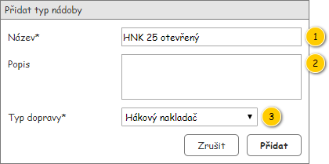

Z důvodu změny zadání nebude implementováno!
Formulář slouží k editaci entity Typ nádoby, která je jeho nepovinným vstupním parametrem.

| Callout | Komponenta | Nadpis | Typ komponenty | Příklad hodnoty | Hodnota | Výchozí hodnota | Formát | Zpřístupněná | Viditelná | Chování | Validace | Poznámka |
|---|---|---|---|---|---|---|---|---|---|---|---|---|
| 1 | Název* | Název | TextBox | HNK 25 otevřený | Entita Typ nádoby. | – | Vždy | Vždy | – | Povinný. Maximálně 50 znaků. | – | |
| 2 | Popis | Popis | MultilineTextBox | Entita Typ nádoby. | – | Vždy | Vždy | – | Maximálně 255 znaků. | – | ||
| 3 | Typ dopravy* | Typ dopravy | ComboBox | Hákový nakladač | Entita Typ dopravy – atribut Typ dopravy entity Typ nádoby. | Hákový nakladač | Pouze v případě, že se jedná o založení nového Typu nádoby. Při editaci stávajícího Typu nádoby již měnit nelze. | Vždy | – | Povinný. | Dostupné hodnoty vychází z číselníku s Typy dopravy. |